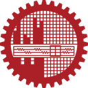

Bangladesh University of Engineering and Technology (BUET)
- CGPA: 3.88 / 4.00
- Dean's List: 2022 and 2023
- Thesis: Taming the Bullwhip Under Geopolitical Uncertainty: A Multi-Echelon Simulation of Machine Learning Forecasting and Blockchain-Enabled Information Visibility
- Key Coursework: Operations Management, Quality Management, Operations Research, Probability and Statistics, Project Management